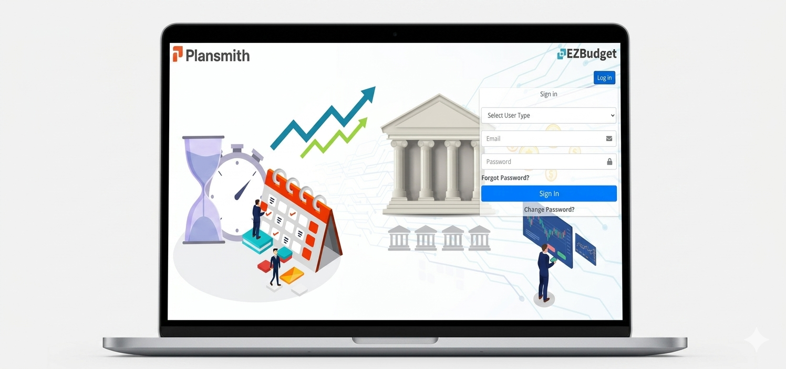

Ownership
I handled the application design independently rather than splitting the UI across a larger design team.
A budgeting application I designed independently at Thinkinno.
I owned the application design solo and worked within Bootstrap 4 constraints, balancing interface clarity with a framework-based frontend structure.

Final project screenshot from the existing portfolio.
THE CHALLENGE
EZbudget was a solo design responsibility, which meant I had to make the interface decisions, maintain consistency across the application and work within Bootstrap 4 on my own.
This page uses the project details and final interface that are currently available. It does not invent research, metrics or missing process artifacts.
DESIGN FOCUS
I handled the application design independently rather than splitting the UI across a larger design team.
Solo ownership made maintaining one visual language across the product especially important.
The framework influenced layout, responsiveness and how the final interface could be implemented.
HOW I APPROACHED IT
Organise budgeting information so the application feels understandable rather than visually dense.
Use repeatable patterns for spacing, cards, hierarchy and actions across screens.
Make interface decisions that could translate cleanly into the framework used for the product.
OUTCOME
EZbudget shows my ability to take sole ownership of a product interface and carry a consistent design direction across an application.
Working solo taught me to make decisions faster and think about consistency across the whole product, not just individual screens.